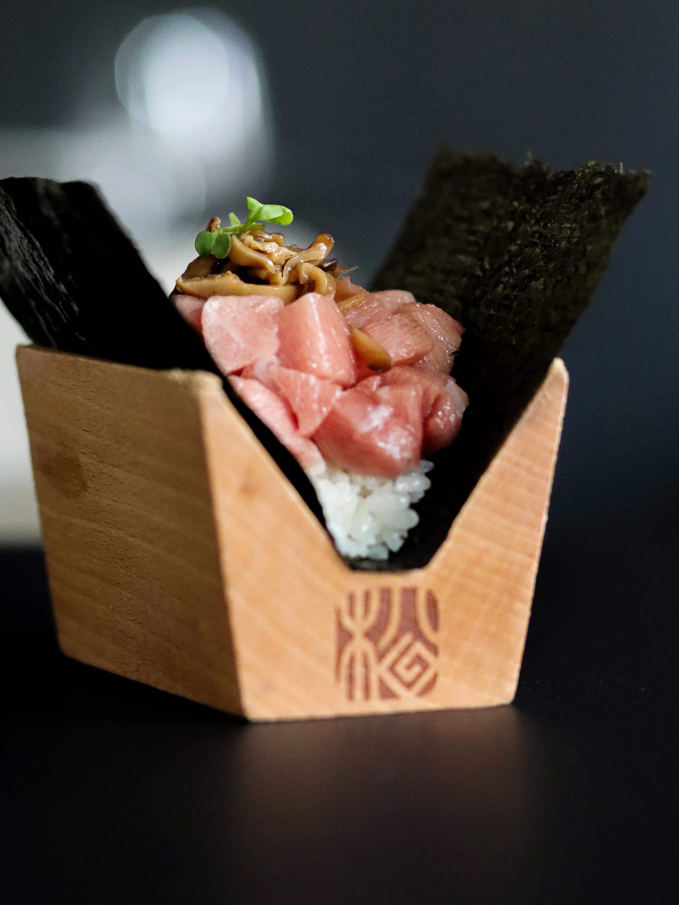
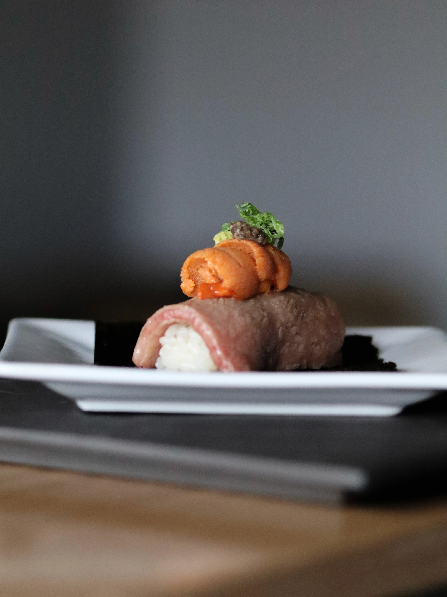

THE STORY — 01
We opened our doors in February 2023 with a simple mission — to bring the highest-quality fish and the most generous portions to as many people as possible, at an exceptional value.
THE STORY — 02
While most maki rolls are packed with rice and just a touch of fish, we’ve flipped that standard. Each roll is a perfect 50/50 balance of rice and fish — the ideal bite, every time.

“We’ve flipped that standard.”
OUR MISSION — FEBRUARY 2023

THE STORY — 03
We make our soy sauce in-house, adding a touch of sweetness to complement its umami depth. And everything is served temaki-style — skip the chopsticks and eat the traditional way, by hand.